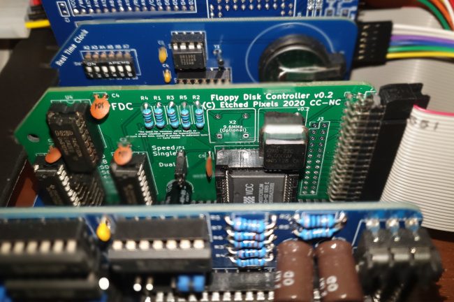

Adding a floppy disk controller to my RC2014 Z80 system
 This article in one of my series
Adventures with RC2014, Z80, and CP/M.
It describes my experiences building a floppy disk controller board,
and testing it with a 3.5" floppy dive.
This article in one of my series
Adventures with RC2014, Z80, and CP/M.
It describes my experiences building a floppy disk controller board,
and testing it with a 3.5" floppy dive.
The floppy problem
It's important to understand that, unlike hard disks of the mid-80s and onwards, floppy disks never supported the IDE interface. 'IDE' is 'integrated drive electronics', which means that most of the logic for controlling the drive is built right into the drive itself. All the host computer has to do is send commands to read and write data -- the drive electronics takes care of all the low-level stuff.
Floppy drives pre-date IDE and, so far as I know, there never was a floppy drive that would work on an IDE interface. It's easy to go wrong in this area, because both floppy and IDE hard drives use a very similar electrical interface -- a flat, multi-way ribbon cable. But floppy drives operate at a much lower level: the host computer is expected to most of the work, including controlling the motor and positioning the read/write head at the correct point.
Early (70s) computers controlled their floppy drives using custom hardware, usually huge boards full of TTL ICs. By the CP/M days, however, a number of proprietary floppy controller ICs had become available, which took care of the low-level interfacing to the drive. It's possible to replicate these functions using a microcontroller, and people have; but it seems more authentic to me to use a design based on a period-appropriate controller chip. Building a floppy controller using neither a microcontroller not a custom controller IC would be a massive undertaking.
Initial considerations
Various designs have been published for RC2014-compatible floppy drive controllers. However, if you want to use one with CP/M, or some similar operating system, then you'll need a controller that is understood by the platform BIOS. If you're writing all the interface code yourself, then that's not a consideration -- in that case, the sufficiency of documentation might be more important. My Z180 system uses RomWBW BIOS, which supports several floppy disk controller designs.
Another consideration is: can you get the parts? TTL parts aren't a problem, but custom floppy drive controller chips are a different matter. Most of parts will be out of production, and all will be hard to find. Your choice of design may turn on what controller chips are available at the time.
Finally: what kind of drive will you use? For authenticity, I would like to use 5.25" drives, but I don't think it's possible to get stable media any more. 3.5" media is still available, and compatible drives are still being made. Even within this media size limitation, drives had different capacities and capabilities. Not all controller designs support all drives, but I suspect that the once-ubiquitous 3.5" 1.4Mb drive is well-supported so, at present, that's what I'm using.
Design selection
I opted for the controller designed by Alan Cox, based on the Western Digital 37C65 chip. Plans for the controller are in this article on Hackaday (and nowhere else, so far as I can tell). I chose this design because it is supported by the BIOS in my CP/M system, and because the parts seemed reasonably available. The 37C65 was made in 40-pin DIP and PLCC44 formats -- Alan's design uses the latter. The good thing about the PLCC44 format is that it doesn't have legs that can snap off -- something that is a genuine concern when using chips that have been pulled from 80s equipment. Of course, this PLCC format requires a proprietary socket for mounting on a through-hole PCB.
In the UK, prices for the PLCC44 variant range from £10 to £40.
It probably won't be possible to get a complete kit of parts for a floppy disk controller -- in fact, you might not even be able to get a bare board. I had to have a board made from the Gerber files on the Hackaday page. This is not particularly expensive, but you probably won't be able to order just one board, and you should expect a few weeks' lead time.
Once the bare board had been fabricated, and I had sourced the controller chip and its socket, assembly of the controller was unremarkable. There are jumpers on the board to set the Z80 port address -- the RomWBW BIOS defaults to 0x48 (which is how the jumpers are set in the photo on the Hackaday website). Other than that, there's not much to configure at the hardware level.
Here's what the assembled board looks like, in place on the backplane.

Powering the drive
Floppy drives notionally require 5V and 12V supplies. Modern ones have a standard power socket that was popularized in desktop PCs. However, I suspect that 3.5" drives typically don't need the 12V supply -- mine does not.
When a 12V supply is used, typically it powers the motor. If there is only a 5V supply, the motor current is drawn from that supply. The current can be considerable -- certainly more than you can comfortably draw from a USB port. So if you're used to powering your RC2014 system from a USB charger -- as I was -- that's not going to work.
I don't actually know how much current my floppy drive draws -- it's hard to measure. My recollection is that to be regarded as 'PC compatible', a floppy drive was not allowed to draw more than one amp. The label on my drive -- which is a period-appropriate Sony unit -- states that it draws 960mA. My gut feeling is that it might transiently draw more current than this.
if a drive does use the 12V rail, most likely it will make fewer demands on the 5V supply.
I'm aware that I'm talking about currents of under one amp as if they were a big deal. In CP/M-era terms, they are -- modern PC power supplies can deliver more than 50 amps on the 5V supply, but my complete RC2014 system -- without the floppy drive -- uses less than 300mA in total. The floppy drive uses considerably more power than the rest of the system put together. However, most of the time I expect it to be idle -- it's not going to affect my electricity bill significantly.
Things to watch out for
The photographs of the board on the Hackaday page don't quite match the latest revision of the board design. In particular, the crystal oscillators have been rotated counterclockwise 90 degrees in the latest version. The legend on the board that shows the orientation is correct, not the photo.
I wanted to use box headers, rather than plain headers, for the disk drive connections. Unfortunately, they wouldn't fit on the board -- there's not enough clearance between the header and the backplane pins. So I must be careful about the orientation of the cable -- there's nothing physically to stop me plugging it in upside down.
The 37C65 chip requires a 16MHz clock, and can use a 9.6 MHz clock, if supplied. The 9.6 MHz clock is used only for a few rare drives, which is good, because 9.6 MHz oscillators seem to be impossible to obtain.
The oscillators are semiconductor parts, and should probably be installed in sockets. They are four-pin devices, but will fit in a conventional 8-pin DIP socket if you push out the middle pins of the socket. However, the oscillator doesn't seem to seat easily in the socket: it took quite a bit of force to position it.
Once the controller board is installed, even if there are no drives, the RomWBW BIOS relabels the other drives in the system, to make room for the new drives. This gave me a nasty turn for a while, because I thought that the floppy controller was interfering with the virtual hard disk on my SD card. All that had happened was that the drive letters had changed. So, booting from ROM, the first virtual disk on my SD card changed from C: to E:, because C: and D: were the (currently not installed) floppy drives.
The board has only one electrolytic capacitor, whose value is unspecified. I guess the value needs to be determined by experiment, because it will depend on who spiky the current draw is of the drive's control lines. Older drives were worse for this, but capacitors are cheap, and I don't see any problem with using the largest value that will fit comfortably in the space on the board. I used 470uF here. I found from hard experience that no size of capacitor will make up for definicies in the power supply.
I know I've mentioned it before but -- you probably won't be able to power a 3.5" floppy drive from a USB port, unless it was designed for low-current operation. Probably a modern floppy drive -- and they do exist -- that was specifically designed to be powered from USB would be fine, but I don't know if any of those devices would work with a 1980s controller chip.